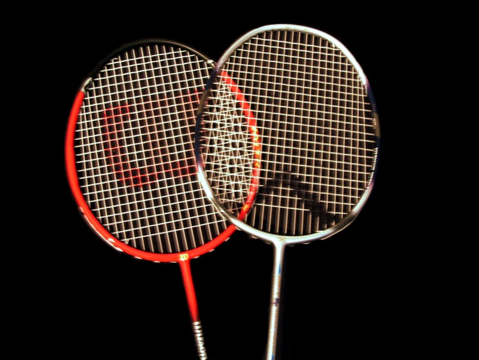

Every rally counts
A match is usually best of three games. A side scores a point on every rally. First to 21 wins a game, but you need a two-point lead; at 29-all, the next point wins.
A guide for every rally
A practical, free learning library for badminton skills, structured training, match play, equipment, recovery, and everyday sports nutrition.
Start as a beginner. Build skills for lifelong improvement.

YOUR GAME, YOUR PACE
01 Know the rules 02 Train with a plan 03 Plan your development 04 Follow a player plan 05 Choose your gear 06 Fuel and recoverThe essentials
Once you know the scoring, service, and court lines, you can focus on the fun part: getting the shuttle back.
A match is usually best of three games. A side scores a point on every rally. First to 21 wins a game, but you need a two-point lead; at 29-all, the next point wins.
Serve from the service court opposite your receiver. Serve from the right when your score is even and the left when it is odd. The shuttle must land in the correct service court.
A shuttle touching a boundary line is in. Singles uses the narrower side boundaries; doubles uses the wider sidelines. Service boundaries differ from rally boundaries.
A fault ends the rally—for example, if the shuttle lands out, fails to cross the net, or a player touches the net. A let pauses play and the rally is replayed.

Quick doubles reminder: after winning a rally while serving, the same server serves again from the alternate service court. When the receiving side wins, it gains the serve. Doubles positions change according to the score and serving side.
Read the complete beginner rules guideThis is a beginner-friendly summary, not the complete rulebook. Check the current Badminton World Federation (BWF) laws for official wording and rule updates.
Make every session count
A useful training week develops more than one shot. Build skills, movement, fitness, match experience—and enough recovery to come back fresh.
Practise serves, clears, drops, smashes, drives, net shots, lifts, blocks, and pushes. First build reliable contact; then work on control, placement, and disguising your shot.
Move early, stay balanced, and recover to a ready position. Shadow the six court corners at a comfortable pace, then add speed only when your movement stays controlled.
Use friendly games and simple constraints to practise decisions under pressure. Pick one small tactical goal for a match, then reflect on what worked.
Example weeks
These are flexible examples, not prescriptions. Keep rest days, adjust effort to your experience and health, and avoid increasing training load too quickly.
Focus Good technique, consistency, and enjoying the process.
Focus Set a session goal, track one skill, and protect recovery time.
Focus Coordinate intensity and load with a qualified coach.
A simple post-session check-in: What did I practise? What felt better? What will I focus on next time?
Your whole game
Technique is only one part of progress. Learn the movement, tactics, training habits, equipment, food, and recovery that support an enjoyable long-term journey.
See what to learn first, how to progress, when to seek coaching, and how to approach friendly and competitive play.
Explore the development pathUnderstand racket feel, strings, grips, shuttles, and the fit and grip features that matter in court shoes.
Read the equipment guideGet practical, flexible ideas for everyday meals, session snacks, hydration, tournament days, and supplement safety.
Read the food and hydration guideUse skill progressions, individual session blueprints, footwork drills, tactical practice, and reflection to guide your next step.
Open the training libraryMore than a workout
Badminton is one way to add movement to your day. How active a session feels depends on its pace, duration, and your own circumstances.
Explore the benefits guideRallies involve varied movement—reaching, changing direction, and recovering between shots. Adapt the pace to your ability.
WHO reports that regular physical activity is associated with benefits for physical health, mental health, sleep, and overall wellbeing.
Singles, doubles, and club sessions offer different ways to enjoy the game and spend active time with others.

These are general benefits associated with physical activity, not guarantees or medical advice. WHO guidance varies by age and circumstance; consult a qualified health professional if you have concerns about starting exercise.
Keep the game enjoyable
A few simple habits help make practice more comfortable and sustainable. Your needs may differ—listen to your body.
Choose court-appropriate shoes and equipment that fit. Check that the playing area is clear, well lit, and safe to move around.
Start with easy movement and controlled practice swings before increasing pace. Build speed and training volume gradually.
Include rest and lighter sessions in your week. Stop if you feel unwell or injured; seek qualified advice when needed.

General educational information only. It is not a substitute for personalized coaching, medical advice, diagnosis, or treatment.
Keep exploring
Each guide includes its own source credits at the bottom of the page.